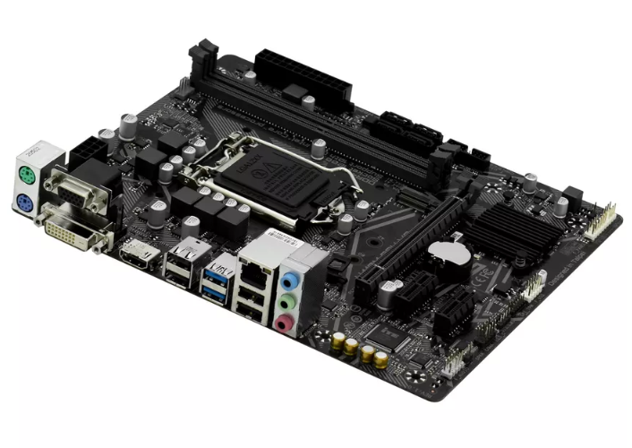

Блок питания
Блок питания (БП) для ПК — это устройство, которое преобразует переменный ток из розетки в постоянный ток нужного напряжения, необходимый для работы всех компонентов компьютера.

Материнская плата
Материнская плата (системная плата) для ПК — это основа компьютера, которая предназначена для соединения и координации работы всех компонентов компьютера.
Процессор
(Центральный) процессор — электронный компонент, который выполняет задачи, связанные с обработкой данных и выполнением инструкций программ.

Оперативная память
Оперативная память (ОЗУ) — временное хранилище данных, которое обеспечивает быстрый доступ к информации для процессора.
Примечание: информация стирается при отключении электричества!

Жёсткий диск
Жёсткий диск — устройство, которое предназначено для долговременного хранения данных на ПК. Используется для установки ОС, программ и файлов.
Примечание: бывают ДВУХ типов:
1. SSD
2. HDD

Видеокарта
Видеокарта (также видеоадаптер, видеоплата, графический адаптер, графический ускоритель) — устройство, которое отвечает за обработку и вывод изображений на экран монитора. Оно преобразует цифровой графический образ, хранящийся в памяти компьютера, в форму, пригодную для вывода на экран.
Характеристики главных составляющих
| Составной элемент | Название модели | Дополнительные характеристики | Средняя стоимость | Тест на производительность | Фотография |
| Motherboard | Gigabyte H410M S2H | Version F3 ; Technology Co. Ltd. ; Date 08/28/2020 | 5 тысяч | ||
| CPU | HexaCore Intel Core i5-10400 | (Comet Lake-S) ; 2900 MHz ; 6 cores ; 12 threads | 9 тысяч |  MEMORY READ: 383.72 в аиде пишет 18021 MB/s ; MEMORY WRITE: 378.54 или вообще в аиде 17992 MB/s MEMORY READ: 383.72 в аиде пишет 18021 MB/s ; MEMORY WRITE: 378.54 или вообще в аиде 17992 MB/s |
 |
| RAM | |||||
| Hard | SSD | MEMORY READ: 379.44 MB/s ; MEMORY WRITE: 356.71 MB/s | |||
| GPU | NVIDIA GeForce GTX 1050 Ti | (GP107) ; 1455 MHz ; 768 cores ; 6 CUs ; Driver 560.94 | 14 тысяч | MEMORY READ: 4908 MB/s ; MEMORY WRITE: 7238 MB/s |